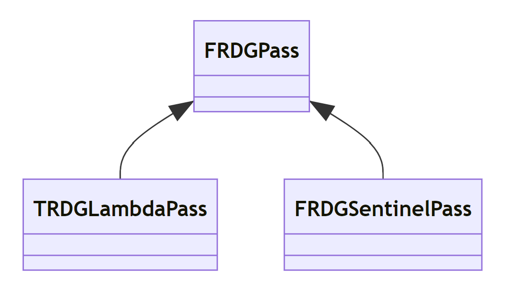
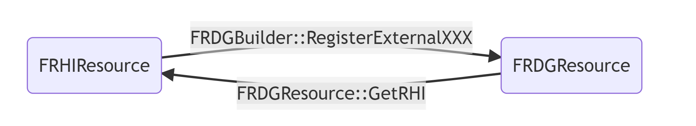

一-RDG（Rendering Dependency Graph）
本文摘抄自深度剖析虚幻渲染体系-RDG
传统的图形API（DirectX 11、OpenGL）要求驱动器调用复杂的启发法，以确定何时以及如何在GPU上执行关键的调度操作。例如清空缓存，管理和再使用内存，执行布局转换等等。由于接口存在即时模式特性，因此需要复杂的记录和状态跟踪才能处理各种极端情况。这些情况最终会对性能产生负面影响，并阻碍并行。
现代的图形API（DirectX 12、Vulkan和Metal 2）与传统图形API不同，将低级GPU管理的负担转移到应用程序。这使得应用程序可以利用渲染管线的高级情境来驱动调度，从而提高性能并且简化渲染堆栈。
- RDG是基于有向无环图(Directed Acyclic Graph，DAG)的调度系统，用于执行渲染管线的整帧优化，利用现代的图形API（DirectX 12、Vulkan和Metal 2），实现自动异步计算调度以及更高效的内存管理和屏障管理来提升性能。
- RDG的理念不在GPU上立即执行Pass，而是先收集所有需要渲染的Pass，然后按照依赖的顺序对图表进行编译和执行，期间会执行各类裁剪和优化。
二-RDG基础
RDG资源
- RDG资源并不是直接用RHI资源，而是包裹了RHI资源引用，然后针对不同类型的资源各自封装，且增加了额外的信息。
- 在RDG系统中，基本上对所有的RHI资源进行了封装和包裹，以便进一步控制、管理RHI资源，精准控制它们的生命周期、引用关系及调试信息等，进一步可以优化、裁剪它们，提升渲染性能。
RDG Pass
以上显示RDG的Pass比较复杂，是RDG体系中最核心的类型之一，涉及了消费者、生产者、转换依赖、各类资源状态等等数据和处理。RDG的Pass有以下几种类型：

RDG Pass和渲染Pass并非一一对应关系，有可能多个合并成一个渲染Pass
FRDGBuilder
- FRDGBuilder是RDG体系的心脏和发动机，也是个大管家，负责收集渲染Pass和参数，编译Pass、数据，处理资源依赖，裁剪和优化各类数据，还有提供执行接口。
三-RDG机制
机制概述
渲染依赖图框架（Rendering Dependency Graph Framework），它设置Lambda范围，该范围设计为Pass，利用延迟执行向RHI发出GPU命令。它们是通过FRDGBuilder::AddPass()创建的。当创建一个Pass时，它需要Shader参数。 可以是任何着色器参数，但框架最感兴趣的是渲染图形资源。
保存所有Pass参数的结构应该使用FRDGBuilder::AllocParameters()分配，以确保正确的生命周期，因为Lambda的执行是被延迟的。
用FRDGBuilder::CreateTexture()或FRDGBuilder::CreateBuffer()创建的一个渲染图资源只记录资源描述符。当资源需要时，将按图表进行分配。渲染图将跟踪资源的生命周期，并在剩余的Pass不再引用它时释放和重用内存。
Pass使用的所有渲染图资源必须在FRDGBuilder::AddPass()给出的Pass参数中，因为渲染图需要知道每个Pass正在使用哪些资源。
只保证在执行Pass时分配资源。 因此，访问它们应该只在使用FRDGBuilder::AddPass()创建的Pass的Lambda范围内完成。未列出Pass使用的一些资源可能会导致问题。
重要的是不要在参数中引用比Pass需要的更多的图资源，因为这人为地增加了关于该资源生命周期的图信息。这可能会导致内存使用的增加或防止Pass的重叠地执行。一个例子是ClearUnusedGraphResources()，它可以自动清除Shader中没有使用的资源引用。如果资源在Pass中没有被使用，则会发出警告。
Pass执行的lambda范围可能发生在FRDGBuilder::AddPass()之后的任何时候。出于调试的目的，它可能直接发生在具有Immediate模式的AddPass()中。当在传递执行过程中发生错误时，立即模式允许您使用可能包含错误源原因的Pass设置的调用堆栈。Immediate模式可以通过命令行命令-rdgimmediate或控制台变量r.RDG.ImmediateMode=1来启用。
由遗留代码生成的池管理资源纹理FPooledRenderTarget可以通过使用FRDGBuilder::RegisterExternalTexture()在渲染图中使用。
有了Pass依赖关系的信息，执行可能会对不同的硬件目标进行优先级排序，例如对内存压力或Pass GPU执行并发进行优先级排序。因此，不能保证Pass的执行顺序。Pass的执行顺序只能保证将在中间资源上执行工作，就像立即模式在GPU上执行工作一样。
渲染图通道不应该修改外部数据结构的状态，因为这可能会根据Pass的执行顺序导致边界情况。应该使用FRDGBuilder::QueueTextureExtraction()提取执行完成后幸存的渲染图资源(例如viewport back buffer、TAA历史记录…)。如果检测到一个Pass对生成任何计划提取的资源或修改外部纹理没有用处，这个Pass甚至可能不会执行警告。
除非是出于强大的技术原因(比如为VR一次性渲染多个视图的立体渲染)，否则不要在同一Pass中将多个工作捆绑在不同的资源上。这将最终在一组工作上创建更多的依赖关系，单个工作可能只需要这些依赖关系的一个子集。调度程序可能会将其中的一部分与其它GPU工作重叠。这也可能保留分配的瞬态资源更长的时间，潜在地增加整帧的最高内存压力峰值。
虽然AddPass()只希望lambda范围有延迟执行，但这并不意味着我们需要编写一个。通过使用一个更简单的工具箱（如FComputeShaderUtils、FPixelShaderUtils）就可以满足大多数情况的需求了。
FRDGBuilder::AddPass
FRDGBuilder::AddPass是向RDG系统增加一个包含Pass参数和Lambda的Pass，其具体的逻辑如下：AddPass会根据传入的参数构建一个RDG Pass的实例，然后设置该Pass的纹理和缓冲区数据，接着用内部设置Pass的依赖Pass等句柄，如果是立即模式，会重定向纹理和缓冲区的Merge状态成Pass状态，并且直接执行
FRDGBuilder::Compile
- RDG编译期间的逻辑非常复杂，步骤繁多，先后经历构建生产者和消费者的依赖关系，确定Pass的裁剪等各类标记，调整资源的生命周期，裁剪Pass，处理Pass的资源转换和屏障，处理异步计算Pass的依赖和引用关系，查找并建立分叉和合并Pass节点，合并所有具体相同渲染目标的光栅化Pass等步骤
FRDGBuilder::Execute
- 在执行过程中涉及到了执行Pass的接口ExecutePass，执行Pass主要有3个步骤：1. prologue、2. pass主体、3. epilogue
- 执行期间，会先编译所有Pass，然后依次执行Pass的前序、主体和后续，相当于将命令队列的BeginRenderPass、执行渲染代码、EndRenderPass分散在它们之间。Pass执行主体实际很简单，就是调用该Pass的Lambda实例，传入使用的命令队列实例。
小结
UE的RDG体系默认执行于渲染线程，虽然会合并具有相同RT的RDG Pass，但不意味着它们会被并行地执行，而是被串行地执行。在普通情况下，每个Pass执行的末期不会立即提交并等待GPU完成，但如果是调试模式且非异步计算，则会。
FRDGBuilder并没有全局唯一的实例，通常是将它声明为局部变量，在一定生命周期内完成Pass的收集、编译和执行的整套流程。声明FRDGBuilder实例的模块有：距离场、渲染纹理、场景渲染器、场景捕捉器、光线追踪、后处理、毛发、虚拟纹理等等。
FRDGBuilder的执行周期可划分为4个阶段：收集Pass、编译Pass、执行Pass和清理。
收集Pass阶段，主要是收集渲染模块的所有能够产生RHI渲染指令的Pass（Lambda），收集之后并非立即执行，将被延迟执行。AddPass的步骤是先创建FRDGPass的实例，并加入到Pass列表，随后执行SetupPass。SetupPass的过程主要是处理纹理和缓冲区的状态、引用、依赖和标记等。
编译Pass阶段，则比较复杂，步骤甚多。主要包含构建生产者和消费者的依赖关系，确定Pass的裁剪等各类标记，调整资源的生命周期，裁剪Pass，处理Pass的资源转换和屏障，处理异步计算Pass的依赖和引用关系，查找并建立分叉和合并Pass节点，合并所有具体相同渲染目标的光栅化Pass等步骤。
执行Pass阶段，首先会执行编译，再根据编译结果执行所有符合条件的Pass。执行单个Pass时依次执行前序、主体和后续，相当于执行命令队列的BeginRenderPass、执行Pass主体（Lambda）渲染代码、EndRenderPass。执行Pass主体时过程简洁，就是调用该Pass的Lambda实例。
最后便是清理阶段，将清理或重置FRDGBuilder实例内的所有数据和内存。
四-RDG开发
创建RDG资源
创建RDG资源（纹理、缓冲区、UAV、SRV等）的示例代码如下：
1 | // ---- 创建RDG纹理示范 ---- |
创建纹理等资源前需要创建资源的描述符，而创建资源的UAV和SRV时，可以用之前创建的资源作为实例传进去，从而达到复用的目的。创建SRV需要将资源实例作为描述符的参数，创建描述符后再创建SRV。
注册外部资源
通过FRDGBuilder::RegisterExternalXXX接口可以完成将外部资源注册到RDG系统中。下面以注册纹理为例：
1 | // 在RDG外创建RHI资源. |
需要注意的是，外部注册的资源，RDG无法控制和管理其生命周期，需要保证RDG使用期间外部资源的生命周期处于正常状态，否则将引发异常甚至程序崩溃。
如果想从RDG资源获取RHI资源的实例，以下代码可达成：
1 | FRHITexture* MyRHITexture = MyRDGTexture.GetRHI(); |
用图例展示RHI资源和RDG资源之间的转换关系：

提取资源
上一章RDG机制中已经提到了，RDG收集Pass之后并非立即执行，而是延迟执行（包括资源被延迟创建或分配），这就导致了一个问题：如果想将渲染后的资源赋值给某个变量，无法使用立即模式，需要适配延迟执行模式。这种适配延迟执行的资源提取是通过以下接口来实现的：
FRDGBuilder::QueueTextureExtractionFRDGBuilder::QueueBufferExtraction
1 | // 创建RDG纹理. |
不过需要注意的是，由于Pass、资源创建和提取都是被延迟的，意味着提取的资源仅可返回，提供给下一帧使用。
增加Pass
整个RDG体系执行的单位是RDG Pass，它们的依赖、引用、输入、输出都是通过FRDGBuilder::AddPass完成，以下是其中一个示例：
1 | // 创建Pass的shader参数. |
向RDG系统增加的Pass可以是传统的Graphics Pass，也可以是Compute Shader，还可以是无参数的Pass。RDG Pass和RHI Pass并非一一对应关系，若干个RDG Pass可能合并成一个RHI Pass执行。具体见上一章节11.3.4 FRDGBuilder::Execute。
创建FRDGBuilder
创建和使用FRDGBuilder的代码非常简单，如下所示：
1 | void RenderMyStuff(FRHICommandListImmediate& RHICmdList) |
需要特别指出的是，FRDGBuilder的实例通常都是局部的，在UE体系中存在若干个FRDGBuilder的实例，主要用于比较独立的模块，例如场景渲染器、后处理、光线追踪等等模块。
FRDGBuilder执行实际有三个步骤：收集Pass、编译Pass、执行Pass，不过FRDGBuilder::Execute已经包含了编译和执行Pass，所以我们不再需要显示地调用FRDGBuilder::Compile接口。
RDG调试
RDG系统存在一些控制台命令，其名称和描述如下：
| 控制台变量 | 描述 |
|---|---|
| r.RDG.AsyncCompute | 控制异步计算策略：0-禁用；1-为异步计算Pass启用标记（默认）；2-开启所有使用compute命令列表的计算通道。 |
| r.RDG.Breakpoint | 当满足某些条件时，断点到调试器的断点位置。0-禁用，1~4-不同的特殊调试模式。 |
| r.RDG.ClobberResources | 在分配时间用指定的清理颜色清除所有渲染目标和纹理/缓冲UAV。用于调试。 |
| r.RDG.CullPasses | RDG是否开启裁剪无用的Pass。0-禁用，1-开启（默认）。 |
| r.RDG.Debug | 允许输出在连接和执行过程中发现的效率低下的警告。 |
| r.RDG.Debug.FlushGPU | 开启每次Pass执行后刷新指令到GPU。当设置(r.RDG.AsyncCompute=0)时禁用异步计算。 |
| r.RDG.Debug.GraphFilter | 将某些调试事件过滤到特定的图中。 |
| r.RDG.Debug.PassFilter | 将某些调试事件过滤到特定的Pass。 |
| r.RDG.Debug.ResourceFilter | 将某些调试事件过滤到特定的资源。 |
| r.RDG.DumpGraph | 将多个可视化日志转储到磁盘。0-禁用，1-显示生产者、消费者Pass依赖，2-显示资源状态和转换，3-显示图形、异步计算的重叠。 |
| r.RDG.ExtendResourceLifetimes | RDG将把资源生命周期扩展到图的全部长度。会增加内存的占用。 |
| r.RDG.ImmediateMode | 在创建Pass时执行Pass。当在Pass的Lambda中崩溃时，连接代码的调用堆栈非常有用。 |
| r.RDG.MergeRenderPasses | 图形将合并相同的、连续的渲染通道到一个单一的渲染通道。0-禁用，1-开启（默认）。 |
| r.RDG.OverlapUAVs | RDG将在需要时重叠UAV的工作。如果禁用，UAV屏障总是插入。 |
| r.RDG.TransitionLog | 输出资源转换到控制台。 |
| r.RDG.VerboseCSVStats | 控制RDG的CSV分析统计的详细程度。0-为图形执行生成一个CSV配置文件，1-为图形执行的每个阶段生成一个CSV文件。 |